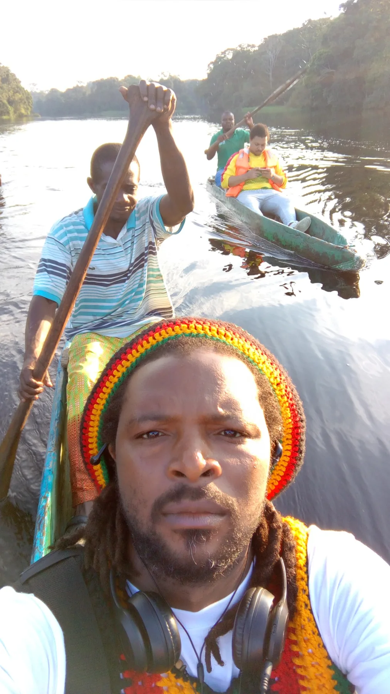
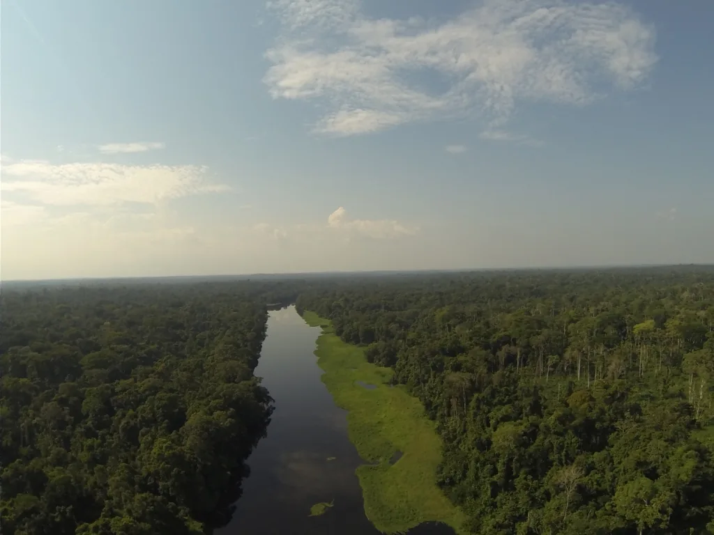
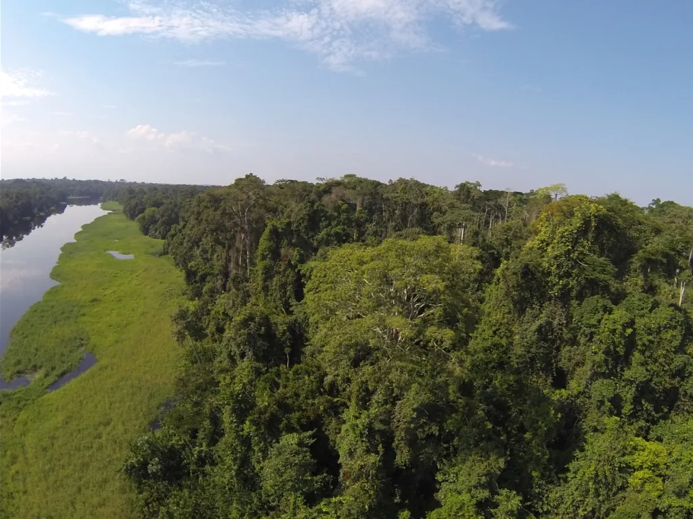
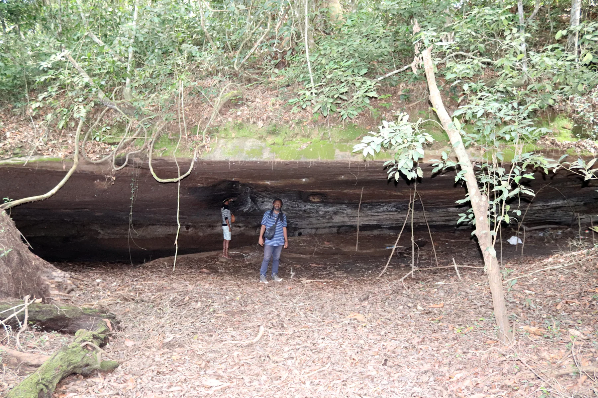
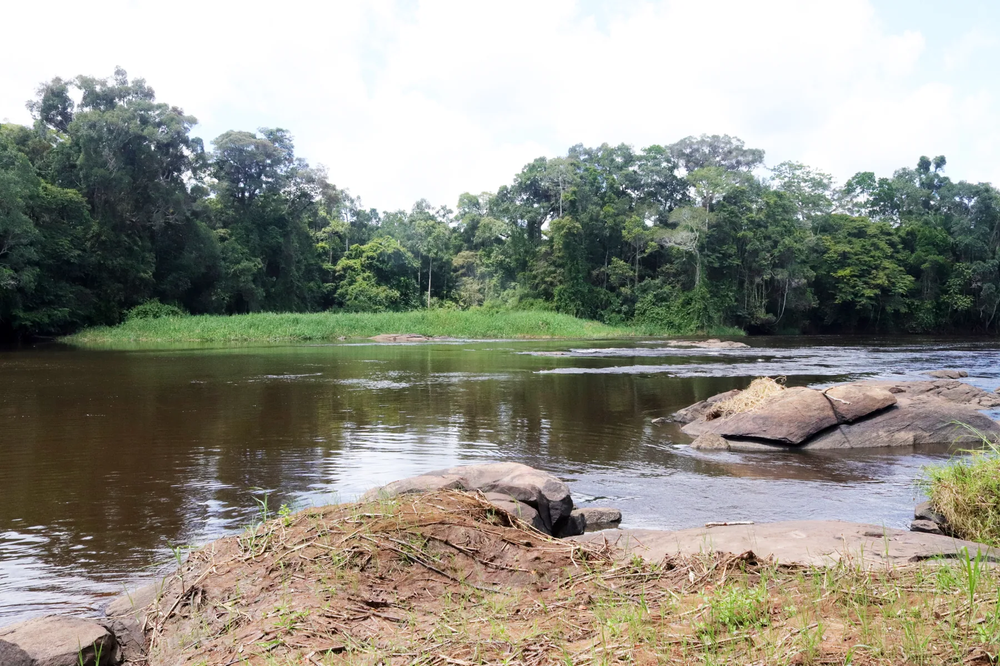
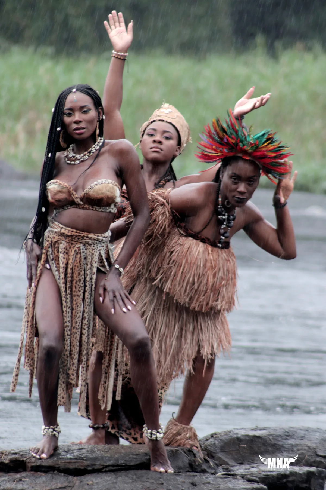
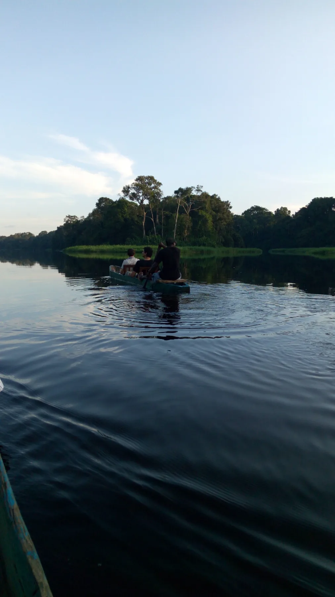
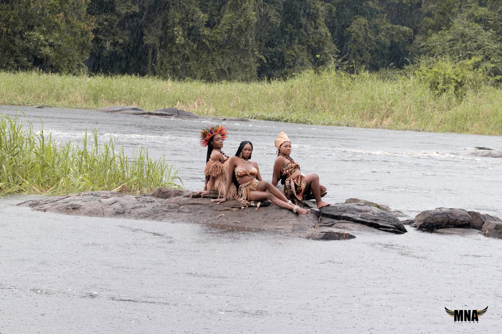
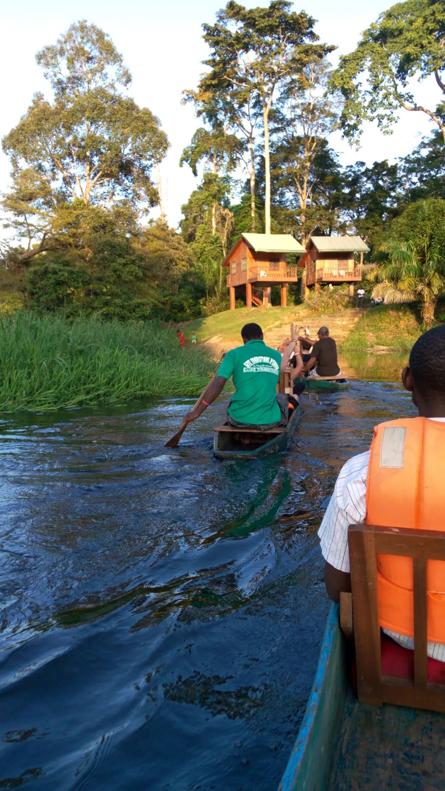

01
Pirogue
Remonter ou descendre le fleuve, selon la saison et le circuit.
ÉBOGO · PARADIS NATUREL · CAMEROUN
Un village écotouristique où le Nyong, la forêt et l’habitat des hommes se rencontrent. Venez pour les paysages. Restez pour les récits, les lieux et la mémoire d’Ébogo.
UN TERRITOIRE À VIVRE
À Ébogo, la forêt semble se parer de toute sa beauté. Le parcours se construit autour du Nyong : naviguer, marcher, observer, apprendre et rencontrer un territoire qui possède aussi ses propres récits.
Découvrir les expériences ↘
CHOISIR UNE EXPÉRIENCE
De la pirogue aux rapides, du sous-bois aux grottes et aux savoirs du paysage, chaque expérience peut devenir le point de départ de votre séjour.

Remonter ou descendre le fleuve, selon la saison et le circuit.

Marcher dans la forêt et rejoindre les lieux remarquables.

Refuges rocheux, grottes et récits associés au territoire.

Un parcours plus long vers les rapides et les paysages en aval.

Apprendre des gestes, techniques et savoir-faire traditionnels.

AU FIL DE L’EAU
Selon la saison, certaines approches du sous-bois se poursuivent en pirogue ou à pied. Le parcours s’adapte au territoire et à l’eau.
SERVICES & PRIX
Les balades en pirogue sont facturées par pirogue. Les activités pédestres sont facturées par personne.
Amont · toutes saisons · 1 h 30
Sous-bois + visite · 1 h
Sous-bois + visite · 1 h
Gros arbre millénaire · 2 h
Circuit · 2 h 10
Sous-bois + visite · 2 h 30
Visite pédestre guidée
Par heure
2 h minimum
Nuitée · février à mars
Village de campement, grottes, gros arbre, etc.
Initiation culturelle
Initiation culturelle
Initiation culturelle
Des réductions de 10 % peuvent être proposées selon le nombre de personnes et la durée du séjour.


APPRENDRE · ÉCHANGER · TRANSMETTRE
RENCONTRE
À Ébogo, le guide ne montre pas seulement le chemin : il donne au paysage une voix.
Erik Beck‘s Awoumou accompagne la découverte du fleuve, de la forêt et des lieux remarquables. Son rôle est aussi de faire vivre l’histoire culturelle d’Ebogo transmise de génération en génération : l’origine d’EVOALI’EBOG, le récit de l’ancêtre sur le Nyong, l’arbre qui s’élève vers les Cieux, la rencontre avec Zamba et la mémoire attachée aux lieux.
PLANIFIER LE VOYAGE
L’adresse officielle de réservation sera ajoutée prochainement.
Pour une demande urgente ou si vous avez besoin d’aide pour organiser la visite.
+237 676 927 644